These convenience functions support the generation of animal movement paths and observations in de novo simulations (sim_*() functions) and simulation-based reconstructions of movement paths (pf_forward() and pf_backward_*()).
ss*()functions set seeds;p*()functions give probabilities;r*()functions simulate random variates;c*()functions calculate outcomes from random-variate inputs;d*()functions return probability densities;
p*(), r*() and c*() functions are used in de novo simulations (via sim_*() functions such as sim_path_walk() and sim_detections()) and the forward simulation-based reconstruction of movement paths (in pf_forward()).
d*() functions are primarily used in the simulation-based reconstruction of movement paths as part of the backward sampler via pf_backward_*().
ssf()
ssv()
rbern(.n, .prob)
dbern(.x, .prob)
rdet(.data, .pdet = pdet, ...)
pdetlogistic(.x, .alpha = 4, .beta = -0.01, .gamma = 750)
pdet(.data, .pdetx = pdetlogistic, ...)
rtruncgamma(.n = 1L, .shape = 15, .scale = 15, .mobility = 500, ...)
dtruncgamma(.x, .shape = 15, .scale = 15, .mobility = 500, ...)
rwn(.n = 1L, .mu = 0, .rho = 0, .sd = 1, ...)
rlen(.n = 1L, .prior = NULL, .t = NULL, ...)
rangrw(.n = 1L, .prior = NULL, .t = NULL, ...)
rangcrw(.n = 1L, .prior = NULL, .t = NULL, ...)
rstep(
.xy0,
.xy1 = matrix(NA, nrow = fnrow(.xy0), ncol = 2L),
.rlen = rlen,
.rang = rangrw,
...,
.lonlat
)
cstep(
.xy0,
.xy1 = matrix(NA, nrow = fnrow(.xy0), ncol = 2L),
.len,
.ang,
.lonlat
)
dstep(
.xy0,
.xy1,
.clen = clen,
.cang,
.dlen = dtruncgamma,
.dang,
...,
.lonlat
)
clen(.xy0, .xy1, .lonlat)
cang(.xy0, .xy1, .lonlat)Arguments
- .n, .x
Arguments for distribution functions (
rbern(),dbern(),rtruncgamma()anddtruncgamma()):.nis anintegerthat defines the number of simulated outcome(s);.xis anumericvector that simulated outcome(s);
- .prob
Additional argument(s) for
rbern()anddbern():.probisnumericvector of probabilities.
- .data, .pdet
Arguments for
rdet()..datais adata.table..pdetis afunctionevaluates the probability of a detection;
For
rdet(),.pdetmust accept the.datadata.tableas its first argument and evaluate the probability of a detection accordingly.rbern()then simulates detection(s). For.pdet =pdet,.datamust include adistcolumn that defines the distances between transmission locations and receivers. Inpdet(),.data$distis passed topdetlogistic()to calculate detection probabilities (see Details).- ...
Arguments passed to/from functions.
ssf(),ssv(): not used;rbern(),dbern(): not used;rdet(),pdet(): passed to.pdet( =pdet(), wrappingpdetlogistic());pdetlogistic(): not used;rtruncgamma(),dtruncgamma(): silently ignored;rwn(): silently ignored;rlen(): passed tortruncgamma();rangrw(): passed torwn();rangcrw(): passed torwn(), excluding.mu;rstep(): passed to.rlenand.rang;dstep(): not used;dstep(): passed to.dlenand.cang;clen(): not used;cang(): not used;
- .alpha, .beta, .gamma
Additional arguments for
pdetlogistic()(see Details)..alphais anumericvalue for the intercept, on the scale of the logistic function..betais anumericvalue for the gradient, on the scale of the logistic function..gammais anumericvalue for the receiver detection range.
- .pdetx
Additional arguments for
pdet()..pdetxis afunctionthat evaluates the probability density of detections from anumericvector (e.g,. of distances).
- .shape, .scale, .mobility
Additional arguments for
rtruncgamma()anddtruncgamma():.shapeis anumericvalue that defines the shape parameter of a Gamma distribution (seestats::rgamma())..scaleis anumericvalue that defines the scale parameter of a Gamma distribution (seestats::rgamma())..mobilityis anumericvalue that defines the maximum possible value (step length) (seetruncdist::rtrunc()).
- .mu, .rho, .sd
Arguments for
rwn()for the simulation of turning angles, passed to themu,rhoandsdarguments ofcircular::rwrappednormal()..sd(sd) is only used if.rho(rho) isNULL.- .prior, .t
Additional arguments for
rlen(),rangrw()andrangcrw(), as used in top-level functions (i.e.,sim_path_walk()):.n---anintegerthat defines the number of simulated outcome(s);.prior---anumericvector that defines the simulated value(s) from the previous time step;.t---anintegerthat defines the time step;...---additional arguments, if needed;
- .xy0, .xy1, .lonlat
Shared arguments for
*step()functions andc*()functions..xy0---a two-column object (matrix,data.frame,data.table) of (x, y) coordinates;.xy1---a two-column object of (x, y) coordinates;.lonlat---alogicalvariable that defines whether or not coordinates are in longitude/latitude or planar coordinates;
- .rlen, .rang
Additional arguments for
rstep()..rlen---Afunctionthat simulates step lengths (metres);.rang---Afunctionthat simulates turning angles (degrees);
The first argument to both functions must be the number of values to simulate. Other arguments are passed via
....- .len, .ang
Additional arguments for
cstep()..len---Anumericvector of lengths (e.g., fromrlen());.ang---Anumericvector of turning angles (e.g., fromrangrw());
- .clen, .cang, .dlen, .dang
Additional arguments for
dstep()..clen---Afunctionthat calculates step lengths between coordinate pairs, such asclen();.cang---(ignored);.dlen---Afunctionthat calculates the probability density of step lengths, such asdtruncgamma();.dang---(ignored);
.cangand.dangarguments are not yet implemented and must bemissing.
Reproducibility
ssf()sets a fixed seed (wrappingset.seed(123L));ssv()sets a time-varying seed (wrappingset.seed(as.integer(as.Date(Sys.time())))) and is primarily intended for package testing;
Detections
Probabilities
pdetlogistic()evaluates detection probability at a receiver, given a transmission from location \(\bold{s} = (x, y)\) as a truncated \(\text{logistic}\) function of the distance (.x) between the transmission (s) and receiver (r) locations, i.e., $$ \text{.prob} = \begin{cases} \text{logistic}(\text{.alpha} + \text{.beta} \times .x) & \text{if } .x < \text{.gamma} \\ 0 & \text{otherwise} \end{cases} $$ where \(\text{logistic}(x) = 1 + e^{-x}\);.alpha, and.betaare parameters; and.gammais the receiver's detection range.pdet()wrapspdetlogistic()to evaluate detection probability;
Distribution functions
*bern()functions are distribution functions for the Bernoulli distribution:rbern()wrapsstats::rbinom()and simulates values from a Bernoulli distribution;dbern()wrapsstats::dbinom()and evaluates the probability density of simulated values;
Movement
Distribution functions
*truncgamma()functions are distribution functions for the truncated Gamma distribution:rtruncgamma()simulates values from a truncated Gamma distribution with a.mobilityparameter that truncates the right-hand side of the distribution;dtruncgamma()returns the densit(ies) of specified values(s);
*wn()functions are distribution functions for the wrapped normal distribution:rwn()wrapscircular::rwrappednormal()and simulates turning angle(s).dwn()is not currently implemented.
Step length and turning angle wrappers
*len()functions wrap*truncgamma()for the simulation of movement step lengths:rlen()wrapsrtruncgamma();dlen()is not currently implemented;clen()calculates the distance (step length) between coordinate pair(s) fordstep();
*ang*()functions wrap*rw()for turning angles:rangrw()wrapsrwn()and is used to simulate random-walk turning angles;rangcrw()wrapsrwn()with.mu = .prior(if specified) and is used to simulate correlated random walks;dangrwanddangcrw()are not currently implemented;cang()calculates turning angles between coordinate pairs;
Step wrappers
rstep()wraps.rlen =rlenand.rang =rangrwto simulate coordinates (viacstep());cstep()used (simulated) step lengths and turning angles to calculate coordinates;dstep()evaluates the probability density of movements between locations. At the time of writing, this only evaluates the density of step lengths and is only suitable for random walks;
Properties
All angles are in degrees (-180, 180):
North = 0 degrees
East = 90 degrees
South = 180 degrees
West = -90 degrees
Warnings
Dots. Most of the above low-level functions silently accept unused dots (
...). In higher level functions (such assim_path_walk(),pf_rpropose_kick()andpf_dpropose()), unused dots produce an error or a warning.Correlated random walks. It is possible to simulate correlated random walks in
sim_path_walk()but at the time of writing this is not supportedpf_forward(). Probability density functions for correlated random walks, as required forpf_forward()andpf_backward_*()(e.g.,dangrw(),dangcrw()) are not implemented.
See also
sim_*functions implement de novo simulation of movements and observations:sim_helpersare convenience functions for simulations;sim_array()simulates acoustic array(s);sim_path_walk()simulates movement path(s) via a walk model;sim_detections()simulates detection(s) at receivers;
pf_forward()implements forward simulation-based reconstruction of movement paths;pf_backward_*()implements backward simulation-based reconstruction of movement paths;skillfunctions compared simulated and reconstructed patterns to evaluate model skill;
Examples
require(data.table)
require(circular)
#> Loading required package: circular
#>
#> Attaching package: ‘circular’
#> The following objects are masked from ‘package:stats’:
#>
#> sd, var
require(terra)
require(geosphere)
#> Loading required package: geosphere
#>
#> Attaching package: ‘geosphere’
#> The following object is masked from ‘package:spatstat.geom’:
#>
#> perimeter
require(testthat)
#> Loading required package: testthat
#>
#> Attaching package: ‘testthat’
#> The following objects are masked from ‘package:terra’:
#>
#> compare, describe
#> The following object is masked from ‘package:dplyr’:
#>
#> matches
#### --------------------------------------------------
# Detection examples
#### Bernoulli distribution random generation
rbern(1, 1)
#> [1] 1
rbern(10, 0.5)
#> [1] 0 0 0 1 1 0 1 0 1 0
#### Bernoulli distribution densities
dbern(1, 1)
#> [1] 1
dbern(c(1, 1), 0.5)
#> [1] 0.5 0.5
dbern(c(1, 1), 0.25)
#> [1] 0.25 0.25
#### Random generation of detections
# Define a data.table of distances
dists <- data.table(individual_id = 1L,
receiver_id = 1L,
dist = runif(100, 0, 1000))
# Simulate detections using default arguments
rdet(.data = data.table(dists))[]
#> individual_id receiver_id dist pr detection
#> <int> <int> <num> <num> <int>
#> 1: 1 1 340.0730018 0.64548927 0
#> 2: 1 1 302.9816537 0.72515606 0
#> 3: 1 1 710.6636784 0.04283432 0
#> 4: 1 1 117.1076726 0.94421892 1
#> 5: 1 1 441.2157147 0.39839499 0
#> 6: 1 1 446.4612114 0.38589227 1
#> 7: 1 1 377.6212274 0.55571461 1
#> 8: 1 1 218.8918695 0.85949251 0
#> 9: 1 1 353.8598318 0.61334664 0
#> 10: 1 1 714.4734710 0.04129925 0
#> 11: 1 1 435.2900374 0.41267927 0
#> 12: 1 1 967.3755807 0.00000000 0
#> 13: 1 1 529.8852548 0.21435819 0
#> 14: 1 1 199.4676904 0.88135484 1
#> 15: 1 1 470.7774424 0.33009080 0
#> 16: 1 1 935.6080389 0.00000000 0
#> 17: 1 1 705.9325881 0.04481655 0
#> 18: 1 1 451.6112895 0.37376162 0
#> 19: 1 1 250.6909966 0.81654162 1
#> 20: 1 1 141.8532326 0.92965931 1
#> 21: 1 1 278.5222069 0.77114326 1
#> 22: 1 1 780.7497357 0.00000000 0
#> 23: 1 1 0.1087831 0.98199457 1
#> 24: 1 1 840.2372811 0.00000000 0
#> 25: 1 1 351.8042129 0.61821009 1
#> 26: 1 1 567.0849334 0.15831097 0
#> 27: 1 1 728.8319978 0.03597406 0
#> 28: 1 1 21.9031256 0.97770769 1
#> 29: 1 1 6.6362328 0.98080338 1
#> 30: 1 1 606.5261224 0.11251938 0
#> 31: 1 1 275.7148999 0.77605988 1
#> 32: 1 1 568.7235028 0.15613981 0
#> 33: 1 1 719.0169597 0.03953734 0
#> 34: 1 1 367.5854763 0.58033414 1
#> 35: 1 1 549.4907254 0.18318632 0
#> 36: 1 1 239.6632042 0.83248858 0
#> 37: 1 1 767.4022354 0.00000000 0
#> 38: 1 1 900.9625863 0.00000000 0
#> 39: 1 1 596.2260747 0.12322259 0
#> 40: 1 1 706.3153589 0.04465298 0
#> 41: 1 1 194.2391614 0.88671415 1
#> 42: 1 1 363.8436075 0.58941896 0
#> 43: 1 1 35.1456436 0.97463131 1
#> 44: 1 1 450.1311048 0.37723262 0
#> 45: 1 1 730.4729095 0.03540931 0
#> 46: 1 1 432.5082041 0.41943772 1
#> 47: 1 1 480.8365365 0.30823894 0
#> 48: 1 1 999.2132059 0.00000000 0
#> 49: 1 1 63.1939324 0.96669130 1
#> 50: 1 1 703.1896717 0.04600551 0
#> 51: 1 1 639.1244817 0.08384276 0
#> 52: 1 1 901.0118728 0.00000000 0
#> 53: 1 1 186.1724865 0.89456804 1
#> 54: 1 1 353.8367534 0.61340137 0
#> 55: 1 1 215.1884853 0.86390565 1
#> 56: 1 1 693.8401624 0.05028755 0
#> 57: 1 1 472.9236863 0.32536221 0
#> 58: 1 1 927.5130213 0.00000000 0
#> 59: 1 1 233.4568023 0.84096583 1
#> 60: 1 1 2.1894865 0.98162296 1
#> 61: 1 1 424.8035613 0.43830706 1
#> 62: 1 1 614.5002132 0.10479918 0
#> 63: 1 1 971.2849511 0.00000000 0
#> 64: 1 1 308.5260333 0.71396907 0
#> 65: 1 1 966.6376223 0.00000000 0
#> 66: 1 1 895.2962193 0.00000000 0
#> 67: 1 1 441.5388021 0.39762088 0
#> 68: 1 1 831.7382676 0.00000000 0
#> 69: 1 1 143.3038416 0.92870478 1
#> 70: 1 1 944.1305054 0.00000000 0
#> 71: 1 1 338.3522753 0.64941693 1
#> 72: 1 1 621.6751623 0.09825624 0
#> 73: 1 1 598.9773932 0.12028078 0
#> 74: 1 1 584.1743262 0.13684525 0
#> 75: 1 1 699.5577409 0.04762607 0
#> 76: 1 1 981.5415039 0.00000000 0
#> 77: 1 1 882.5952888 0.00000000 0
#> 78: 1 1 769.9010484 0.00000000 0
#> 79: 1 1 106.6005612 0.94950154 1
#> 80: 1 1 330.2258411 0.66768686 1
#> 81: 1 1 696.4109025 0.04907390 0
#> 82: 1 1 172.9878739 0.90637208 1
#> 83: 1 1 624.3614336 0.09590170 0
#> 84: 1 1 247.5056108 0.82126534 1
#> 85: 1 1 47.5536855 0.97137586 1
#> 86: 1 1 243.0763536 0.82767473 0
#> 87: 1 1 835.2360025 0.00000000 0
#> 88: 1 1 864.9492112 0.00000000 0
#> 89: 1 1 478.6535720 0.31291300 0
#> 90: 1 1 519.3621342 0.23261189 0
#> 91: 1 1 82.4466052 0.95990312 1
#> 92: 1 1 767.0589506 0.00000000 0
#> 93: 1 1 339.2616406 0.64734373 1
#> 94: 1 1 209.7547008 0.87016890 0
#> 95: 1 1 301.5412861 0.72801746 1
#> 96: 1 1 862.0210048 0.00000000 0
#> 97: 1 1 517.5179457 0.23592005 0
#> 98: 1 1 584.1647440 0.13685657 0
#> 99: 1 1 421.1384822 0.44734970 0
#> 100: 1 1 364.1440040 0.58869180 1
#> individual_id receiver_id dist pr detection
# Customise arguments passed to .pdet -> pdet() -> pdetlogistic()
rdet(.data = dists, .gamma = 10)[]
#> individual_id receiver_id dist pr detection
#> <int> <int> <num> <num> <int>
#> 1: 1 1 340.0730018 0.0000000 0
#> 2: 1 1 302.9816537 0.0000000 0
#> 3: 1 1 710.6636784 0.0000000 0
#> 4: 1 1 117.1076726 0.0000000 0
#> 5: 1 1 441.2157147 0.0000000 0
#> 6: 1 1 446.4612114 0.0000000 0
#> 7: 1 1 377.6212274 0.0000000 0
#> 8: 1 1 218.8918695 0.0000000 0
#> 9: 1 1 353.8598318 0.0000000 0
#> 10: 1 1 714.4734710 0.0000000 0
#> 11: 1 1 435.2900374 0.0000000 0
#> 12: 1 1 967.3755807 0.0000000 0
#> 13: 1 1 529.8852548 0.0000000 0
#> 14: 1 1 199.4676904 0.0000000 0
#> 15: 1 1 470.7774424 0.0000000 0
#> 16: 1 1 935.6080389 0.0000000 0
#> 17: 1 1 705.9325881 0.0000000 0
#> 18: 1 1 451.6112895 0.0000000 0
#> 19: 1 1 250.6909966 0.0000000 0
#> 20: 1 1 141.8532326 0.0000000 0
#> 21: 1 1 278.5222069 0.0000000 0
#> 22: 1 1 780.7497357 0.0000000 0
#> 23: 1 1 0.1087831 0.9819946 1
#> 24: 1 1 840.2372811 0.0000000 0
#> 25: 1 1 351.8042129 0.0000000 0
#> 26: 1 1 567.0849334 0.0000000 0
#> 27: 1 1 728.8319978 0.0000000 0
#> 28: 1 1 21.9031256 0.0000000 0
#> 29: 1 1 6.6362328 0.9808034 1
#> 30: 1 1 606.5261224 0.0000000 0
#> 31: 1 1 275.7148999 0.0000000 0
#> 32: 1 1 568.7235028 0.0000000 0
#> 33: 1 1 719.0169597 0.0000000 0
#> 34: 1 1 367.5854763 0.0000000 0
#> 35: 1 1 549.4907254 0.0000000 0
#> 36: 1 1 239.6632042 0.0000000 0
#> 37: 1 1 767.4022354 0.0000000 0
#> 38: 1 1 900.9625863 0.0000000 0
#> 39: 1 1 596.2260747 0.0000000 0
#> 40: 1 1 706.3153589 0.0000000 0
#> 41: 1 1 194.2391614 0.0000000 0
#> 42: 1 1 363.8436075 0.0000000 0
#> 43: 1 1 35.1456436 0.0000000 0
#> 44: 1 1 450.1311048 0.0000000 0
#> 45: 1 1 730.4729095 0.0000000 0
#> 46: 1 1 432.5082041 0.0000000 0
#> 47: 1 1 480.8365365 0.0000000 0
#> 48: 1 1 999.2132059 0.0000000 0
#> 49: 1 1 63.1939324 0.0000000 0
#> 50: 1 1 703.1896717 0.0000000 0
#> 51: 1 1 639.1244817 0.0000000 0
#> 52: 1 1 901.0118728 0.0000000 0
#> 53: 1 1 186.1724865 0.0000000 0
#> 54: 1 1 353.8367534 0.0000000 0
#> 55: 1 1 215.1884853 0.0000000 0
#> 56: 1 1 693.8401624 0.0000000 0
#> 57: 1 1 472.9236863 0.0000000 0
#> 58: 1 1 927.5130213 0.0000000 0
#> 59: 1 1 233.4568023 0.0000000 0
#> 60: 1 1 2.1894865 0.9816230 1
#> 61: 1 1 424.8035613 0.0000000 0
#> 62: 1 1 614.5002132 0.0000000 0
#> 63: 1 1 971.2849511 0.0000000 0
#> 64: 1 1 308.5260333 0.0000000 0
#> 65: 1 1 966.6376223 0.0000000 0
#> 66: 1 1 895.2962193 0.0000000 0
#> 67: 1 1 441.5388021 0.0000000 0
#> 68: 1 1 831.7382676 0.0000000 0
#> 69: 1 1 143.3038416 0.0000000 0
#> 70: 1 1 944.1305054 0.0000000 0
#> 71: 1 1 338.3522753 0.0000000 0
#> 72: 1 1 621.6751623 0.0000000 0
#> 73: 1 1 598.9773932 0.0000000 0
#> 74: 1 1 584.1743262 0.0000000 0
#> 75: 1 1 699.5577409 0.0000000 0
#> 76: 1 1 981.5415039 0.0000000 0
#> 77: 1 1 882.5952888 0.0000000 0
#> 78: 1 1 769.9010484 0.0000000 0
#> 79: 1 1 106.6005612 0.0000000 0
#> 80: 1 1 330.2258411 0.0000000 0
#> 81: 1 1 696.4109025 0.0000000 0
#> 82: 1 1 172.9878739 0.0000000 0
#> 83: 1 1 624.3614336 0.0000000 0
#> 84: 1 1 247.5056108 0.0000000 0
#> 85: 1 1 47.5536855 0.0000000 0
#> 86: 1 1 243.0763536 0.0000000 0
#> 87: 1 1 835.2360025 0.0000000 0
#> 88: 1 1 864.9492112 0.0000000 0
#> 89: 1 1 478.6535720 0.0000000 0
#> 90: 1 1 519.3621342 0.0000000 0
#> 91: 1 1 82.4466052 0.0000000 0
#> 92: 1 1 767.0589506 0.0000000 0
#> 93: 1 1 339.2616406 0.0000000 0
#> 94: 1 1 209.7547008 0.0000000 0
#> 95: 1 1 301.5412861 0.0000000 0
#> 96: 1 1 862.0210048 0.0000000 0
#> 97: 1 1 517.5179457 0.0000000 0
#> 98: 1 1 584.1647440 0.0000000 0
#> 99: 1 1 421.1384822 0.0000000 0
#> 100: 1 1 364.1440040 0.0000000 0
#> individual_id receiver_id dist pr detection
# Customise .pdet model
# * See below.
#### Detection probability
# Use pdetlogistic() to evaluate detection Pr as a logistic function of distance
pdetlogistic(1:10)
#> [1] 0.9818363 0.9816571 0.9814762 0.9812935 0.9811090 0.9809228 0.9807348
#> [8] 0.9805449 0.9803532 0.9801597
pdetlogistic(1:10, .gamma = 500)
#> [1] 0.9818363 0.9816571 0.9814762 0.9812935 0.9811090 0.9809228 0.9807348
#> [8] 0.9805449 0.9803532 0.9801597
# Use pdet() wrapper function
pdet(dists)
#> [1] 0.64548927 0.72515606 0.04283432 0.94421892 0.39839499 0.38589227
#> [7] 0.55571461 0.85949251 0.61334664 0.04129925 0.41267927 0.00000000
#> [13] 0.21435819 0.88135484 0.33009080 0.00000000 0.04481655 0.37376162
#> [19] 0.81654162 0.92965931 0.77114326 0.00000000 0.98199457 0.00000000
#> [25] 0.61821009 0.15831097 0.03597406 0.97770769 0.98080338 0.11251938
#> [31] 0.77605988 0.15613981 0.03953734 0.58033414 0.18318632 0.83248858
#> [37] 0.00000000 0.00000000 0.12322259 0.04465298 0.88671415 0.58941896
#> [43] 0.97463131 0.37723262 0.03540931 0.41943772 0.30823894 0.00000000
#> [49] 0.96669130 0.04600551 0.08384276 0.00000000 0.89456804 0.61340137
#> [55] 0.86390565 0.05028755 0.32536221 0.00000000 0.84096583 0.98162296
#> [61] 0.43830706 0.10479918 0.00000000 0.71396907 0.00000000 0.00000000
#> [67] 0.39762088 0.00000000 0.92870478 0.00000000 0.64941693 0.09825624
#> [73] 0.12028078 0.13684525 0.04762607 0.00000000 0.00000000 0.00000000
#> [79] 0.94950154 0.66768686 0.04907390 0.90637208 0.09590170 0.82126534
#> [85] 0.97137586 0.82767473 0.00000000 0.00000000 0.31291300 0.23261189
#> [91] 0.95990312 0.00000000 0.64734373 0.87016890 0.72801746 0.00000000
#> [97] 0.23592005 0.13685657 0.44734970 0.58869180
pdet(dists, .gamma = 500)
#> [1] 0.6454893 0.7251561 0.0000000 0.9442189 0.3983950 0.3858923 0.5557146
#> [8] 0.8594925 0.6133466 0.0000000 0.4126793 0.0000000 0.0000000 0.8813548
#> [15] 0.3300908 0.0000000 0.0000000 0.3737616 0.8165416 0.9296593 0.7711433
#> [22] 0.0000000 0.9819946 0.0000000 0.6182101 0.0000000 0.0000000 0.9777077
#> [29] 0.9808034 0.0000000 0.7760599 0.0000000 0.0000000 0.5803341 0.0000000
#> [36] 0.8324886 0.0000000 0.0000000 0.0000000 0.0000000 0.8867141 0.5894190
#> [43] 0.9746313 0.3772326 0.0000000 0.4194377 0.3082389 0.0000000 0.9666913
#> [50] 0.0000000 0.0000000 0.0000000 0.8945680 0.6134014 0.8639056 0.0000000
#> [57] 0.3253622 0.0000000 0.8409658 0.9816230 0.4383071 0.0000000 0.0000000
#> [64] 0.7139691 0.0000000 0.0000000 0.3976209 0.0000000 0.9287048 0.0000000
#> [71] 0.6494169 0.0000000 0.0000000 0.0000000 0.0000000 0.0000000 0.0000000
#> [78] 0.0000000 0.9495015 0.6676869 0.0000000 0.9063721 0.0000000 0.8212653
#> [85] 0.9713759 0.8276747 0.0000000 0.0000000 0.3129130 0.0000000 0.9599031
#> [92] 0.0000000 0.6473437 0.8701689 0.7280175 0.0000000 0.0000000 0.0000000
#> [99] 0.4473497 0.5886918
# Customise .pdetx model
pdetlinear <- function(.x, .alpha = 1, .beta = -0.002, .gamma = 500) {
pr <- .alpha + .beta * .x
pr <- pmax(pr, 0)
pr <- pmin(pr, 1)
pr[.x > .gamma] <- 0
# pr <- dbern(.x = 1L, size = 1L, prob = pr)
pr
}
plot(1:500, pdetlinear(1:500),
xlim = c(0, 500), ylim = c(0, 1),
xlab = "Detection probability", ylab = "Distance (m)",
type = "l")
pdet(dists, .pdetx = pdetlinear)
#> [1] 0.31985400 0.39403669 0.00000000 0.76578465 0.11756857 0.10707758
#> [7] 0.24475755 0.56221626 0.29228034 0.00000000 0.12941993 0.00000000
#> [13] 0.00000000 0.60106462 0.05844512 0.00000000 0.00000000 0.09677742
#> [19] 0.49861801 0.71629353 0.44295559 0.00000000 0.99978243 0.00000000
#> [25] 0.29639157 0.00000000 0.00000000 0.95619375 0.98672753 0.00000000
#> [31] 0.44857020 0.00000000 0.00000000 0.26482905 0.00000000 0.52067359
#> [37] 0.00000000 0.00000000 0.00000000 0.00000000 0.61152168 0.27231279
#> [43] 0.92970871 0.09973779 0.00000000 0.13498359 0.03832693 0.00000000
#> [49] 0.87361214 0.00000000 0.00000000 0.00000000 0.62765503 0.29232649
#> [55] 0.56962303 0.00000000 0.05415263 0.00000000 0.53308640 0.99562103
#> [61] 0.15039288 0.00000000 0.00000000 0.38294793 0.00000000 0.00000000
#> [67] 0.11692240 0.00000000 0.71339232 0.00000000 0.32329545 0.00000000
#> [73] 0.00000000 0.00000000 0.00000000 0.00000000 0.00000000 0.00000000
#> [79] 0.78679888 0.33954832 0.00000000 0.65402425 0.00000000 0.50498878
#> [85] 0.90489263 0.51384729 0.00000000 0.00000000 0.04269286 0.00000000
#> [91] 0.83510679 0.00000000 0.32147672 0.58049060 0.39691743 0.00000000
#> [97] 0.00000000 0.00000000 0.15772304 0.27171199
# Use pdetlinear in rdet()
det <- rdet(.data = dists, .pdetx = pdetlinear)
points(det$dist, det$detection)
#### --------------------------------------------------
# Movement examples
ssv()
n <- 1e5L
#### Truncated gamma random generation
# Simulate values from truncated gamma with different parameters
hist(rtruncgamma(n))
hist(rtruncgamma(n, .shape = 1.5, .scale = 100))
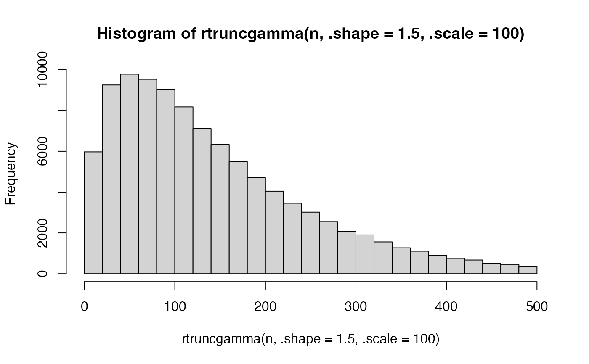
hist(rtruncgamma(n, .shape = 1.5, .scale = 100, .mobility = 50))
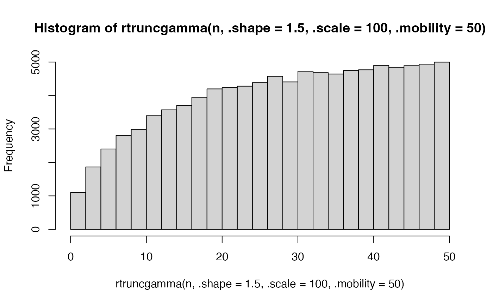
#### Truncated gamma densities
# Calculate densities from truncated gamma with different parameters
dtruncgamma(10, .shape = 1.5, .scale = 100)
#> [1] 0.003289763
dtruncgamma(10, .shape = 1.5, .scale = 100, .mobility = 50)
#> [1] 0.01624511
# Visualise density curve with dtruncgamma()
curve(dtruncgamma, 0, 500)
# Show correspondence between rtruncgamma() and dtruncgamma()
hist(rtruncgamma(n), freq = FALSE)
lines(1:500, dtruncgamma(1:500))
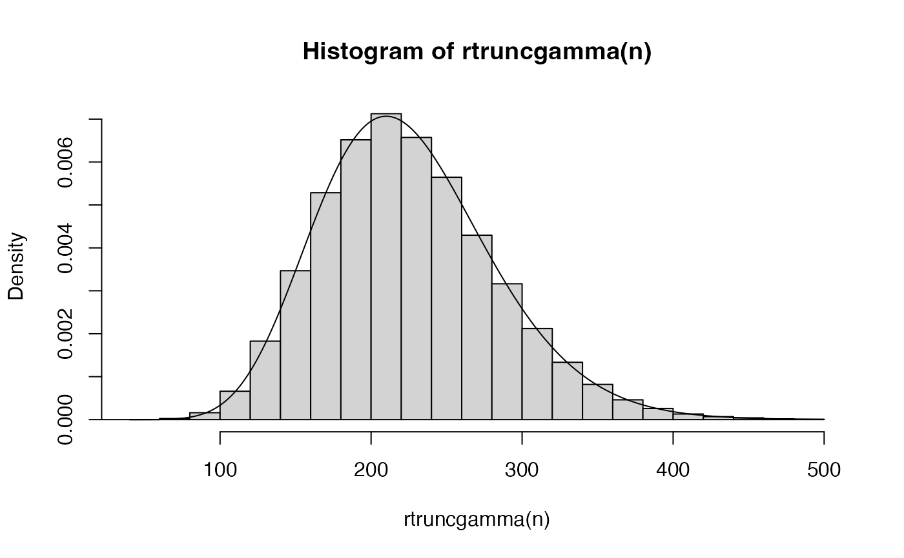
#### Wrapped normal random generation
# Simulate values from wrapped normal distribution
hist(rwn(n))
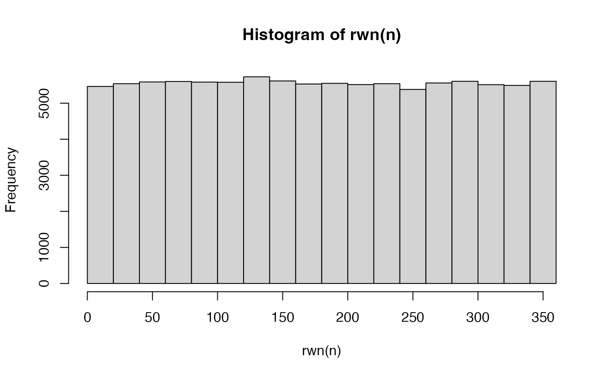
hist(rwn(n, .mu = degrees(0), .rho = 0.7))
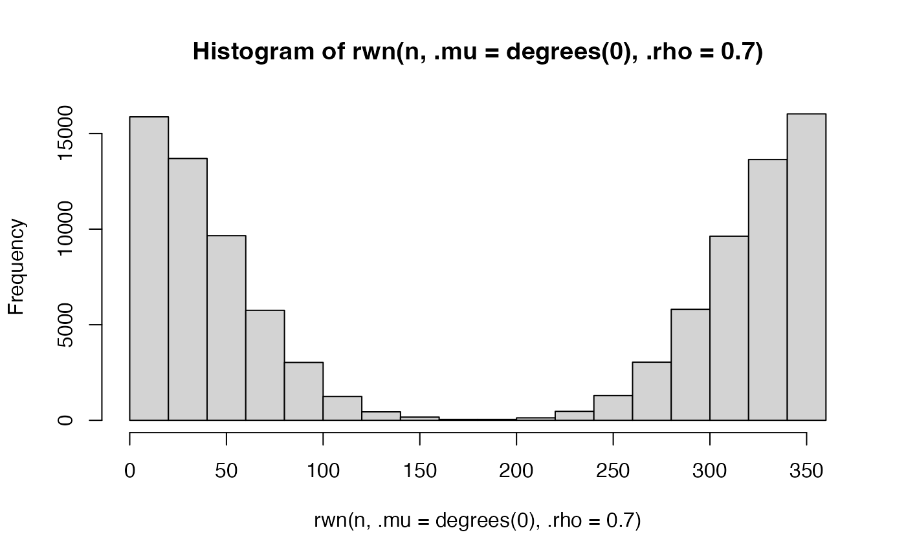
hist(rwn(n, .mu = degrees(0), .sd = 100))
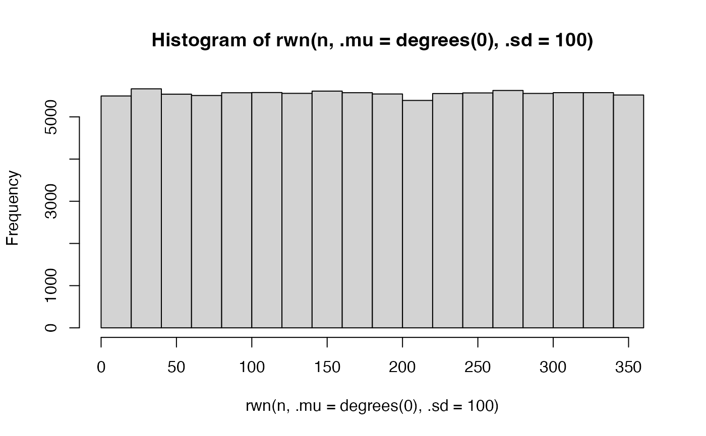
#### Random generation of step lengths & turning angles
# Simulate step lengths with different parameters
hist(rlen(n))
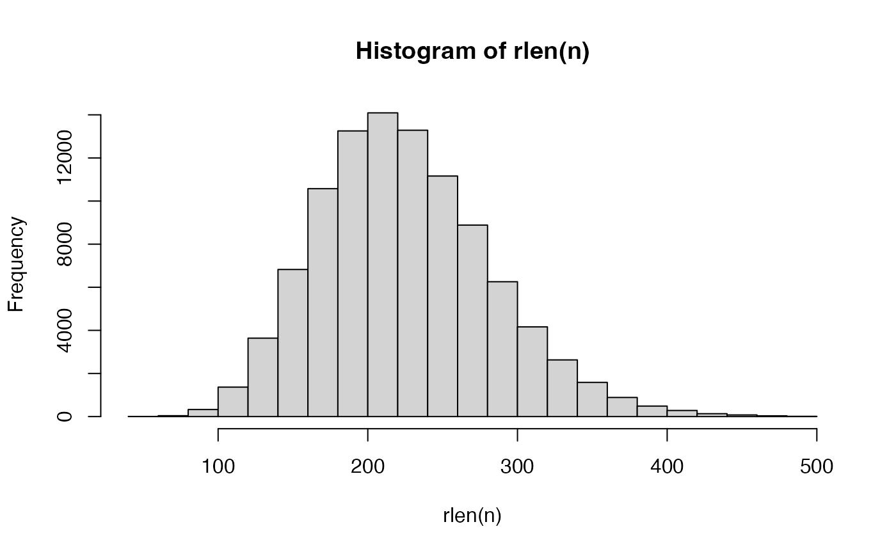
hist(rlen(n, .shape = 50))
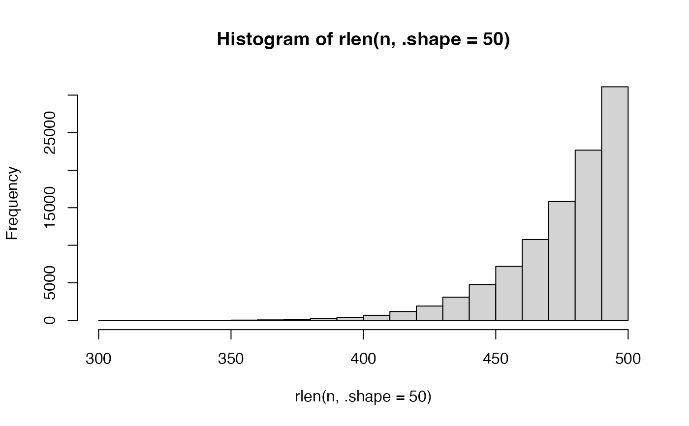
# Simulate random-walk angles
hist(rangrw(n))
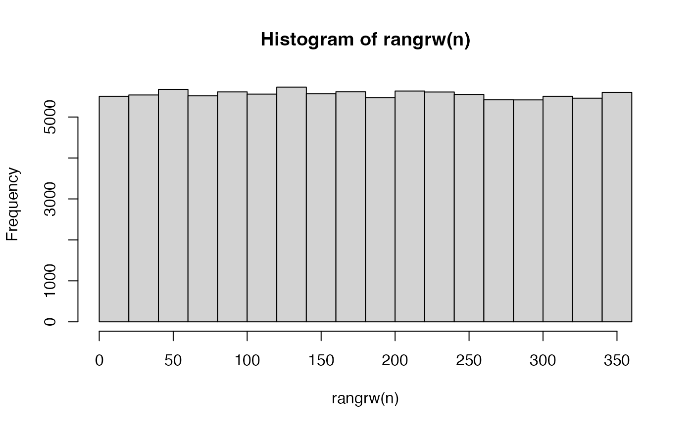
hist(rangrw(n, .mu = degrees(10), .rho = 0.99))
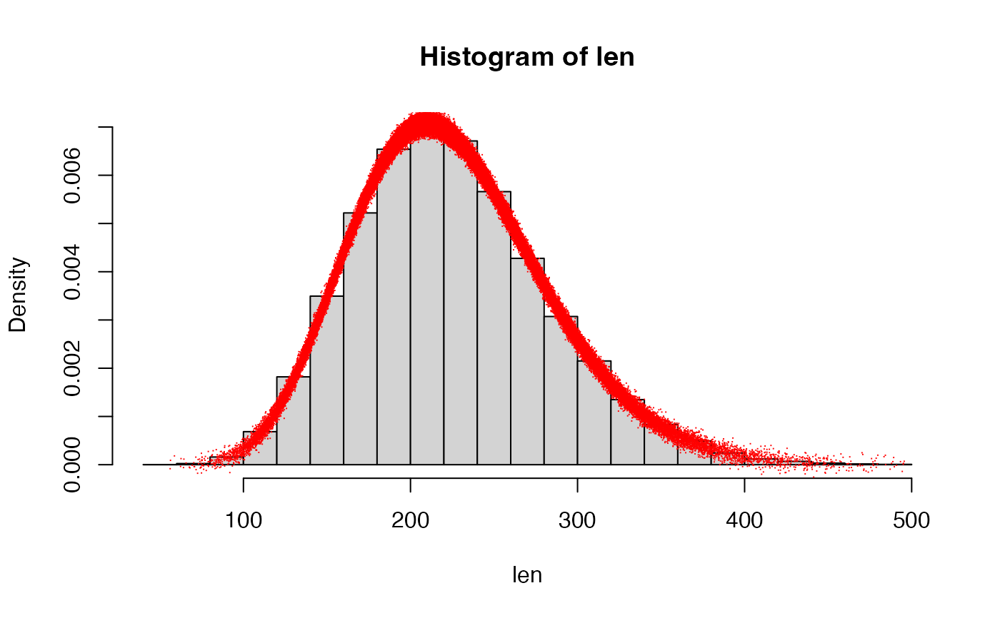
# Simulate correlated random-walk angles
a1 <- rangrw(n)
a2 <- rangcrw(n, .prior = a1, .rho = 0.999)
cor.circular(degrees(a1), degrees(a2))
#> [1] 0.998991
#### Calculate lengths and angles
# Simulate two coordinate matrices
m0 <- cbind(runif(n), runif(n))
m1 <- rstep(m0, .lonlat = FALSE)
# Calculate step lengths and turning angles
len <- clen(m0, m1, .lonlat = FALSE)
ang <- cang(m0, m1, .lonlat = FALSE)
# Show that cstep(m0, m1) = m1
expect_equal(
m1,
cstep(m0, m1,
.len = len,
.ang = ang,
.lonlat = FALSE)
)
# Show alignment between simulated lengths and probability densities
hist(len, freq = FALSE)
points(len,
dstep(m0, m1, .lonlat = FALSE) + rnorm(n, 0, 0.0001),
col = "red", pch = ".")
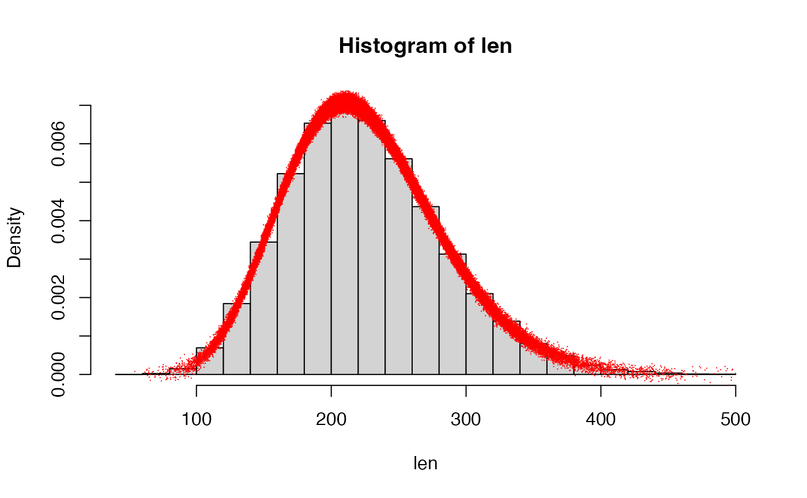
#### Compare lonlat versus planar coordinates
# Simulate coordinates
gebco <- dat_gebco()
m0 <- terra::spatSample(gebco, size = terra::ncell(gebco),
xy = TRUE, values = FALSE) |> unname()
m1 <- rstep(m0, .lonlat = FALSE)
m0_ll <- terra::project(m0, from = terra::crs(gebco), to = "EPSG:4326")
m1_ll <- terra::project(m1, from = terra::crs(gebco), to = "EPSG:4326")
# Validate length calculations
len <- clen(m0, m1, .lonlat = FALSE)
len_ll <- clen(m0_ll, m1_ll, .lonlat = TRUE)
head(cbind(len, len_ll))
#> len len_ll
#> [1,] 327.9448 327.9224
#> [2,] 282.6075 282.5881
#> [3,] 286.6682 286.6484
#> [4,] 344.0054 343.9809
#> [5,] 168.5626 168.5507
#> [6,] 221.7253 221.7095
max(abs(len - len_ll))
#> [1] 0.07708006
expect_equal(len, len_ll, tolerance = 0.1)
# Validate angle calculations
ang <- cang(m0, m1, .lonlat = FALSE)
ang_ll <- cang(m0_ll, m1_ll, .lonlat = TRUE)
head(cbind(ang, ang_ll))
#> ang ang_ll
#> [1,] -90.176543 -87.520301
#> [2,] -122.964544 -120.306968
#> [3,] -86.779753 -84.120798
#> [4,] 71.864060 74.524384
#> [5,] -141.755662 -139.094015
#> [6,] -4.059498 -1.396448
max(abs((ang - ang_ll + 180) %% 360 - 180))
#> [1] 2.912376
expect_equal(ang, ang_ll, tolerance = 0.1)
# Validate cstep()
expect_equal(
m1,
cstep(m0, .len = len, .ang = ang, .lonlat = FALSE)
)
expect_equal(
m1_ll,
cstep(m0_ll, .len = len_ll, .ang = ang_ll, .lonlat = TRUE)
)
# Validate dstep()
hist(len, freq = FALSE)
points(len, dstep(m0, m1, .lonlat = FALSE))
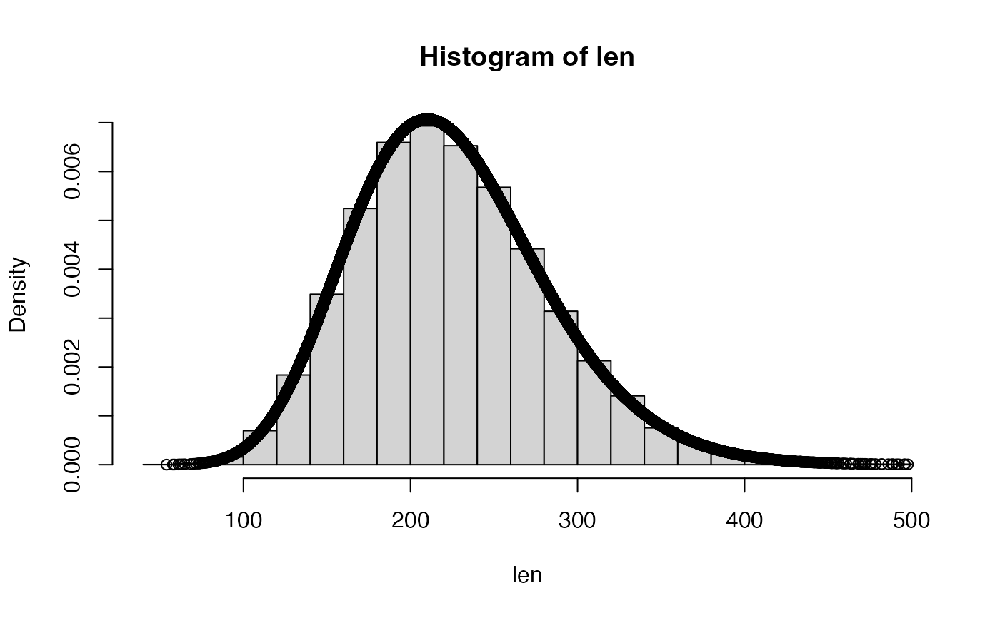
hist(len_ll, freq = FALSE)
points(len_ll, dstep(m0_ll, m1_ll, .lonlat = TRUE))
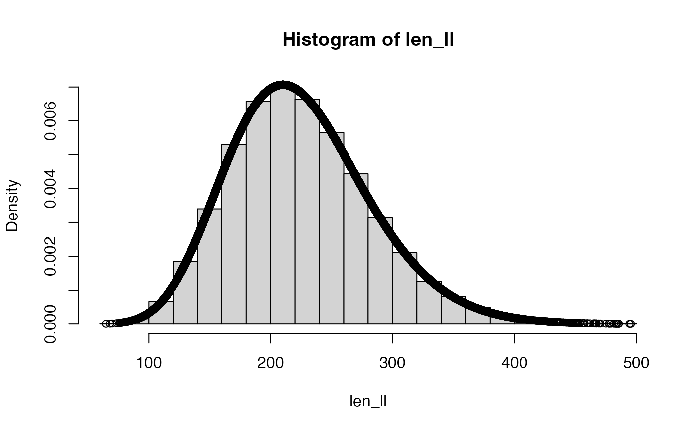
#### --------------------------------------------------
# Understanding movement angles
#### TLDR
# 0 = North
# 90 = East
# 180 = South
# -90 (or 270) = West
#### Define planar and lon/lat grids
g <- dat_gebco()
gll <- project(g, "EPSG:4326")
#### Define lon/lat coordinates
centre <- cbind(-5.614005, 56.43463)
north <- cstep(centre, .len = 2e5, .ang = 0, .lonlat = TRUE)
east <- cstep(centre, .len = 2e5, .ang = 90, .lonlat = TRUE)
south <- cstep(centre, .len = 2e5, .ang = 180, .lonlat = TRUE)
west <- cstep(centre, .len = 2e5, .ang = -90, .lonlat = TRUE)
#### Define planar coordinates
proj_utm <- function(.xy) {
terra::project(.xy, from = crs(gll), to = crs(g))
}
centre_utm <- proj_utm(centre)
north_utm <- proj_utm(north)
east_utm <- proj_utm(east)
south_utm <- proj_utm(south)
west_utm <- proj_utm(west)
#### geosphere::bearing() returns initial bearings [-180, 180]
bearing(centre, north) # 0
#> [1] 0
bearing(centre, east) # 90
#> [1] 90
bearing(centre, south) # 180
#> [1] 180
bearing(centre, west) # -90
#> [1] -90
# cf. (geosphere::bearingRhumb() returns rhumbline bearings [0, 360])
bearingRhumb(centre, north) # 0
#> [1] 0
bearingRhumb(centre, east) # ~90
#> [1] 91.35262
bearingRhumb(centre, south) # 180
#> [1] 180
bearingRhumb(centre, west) # ~270
#> [1] 268.6474
#### cang(..., .lonlat = TRUE) wraps geosphere::bearing()
cang(centre, north, .lonlat = TRUE) # 0
#> [1] 0
cang(centre, east, .lonlat = TRUE) # 90
#> [1] 90
cang(centre, south, .lonlat = TRUE) # 180
#> [1] 180
cang(centre, west, .lonlat = TRUE) # -90
#> [1] -90
#### cang(..., .lonlat = FALSE) returns [-180, 180] to match geosphere::bearing()
cang(centre_utm, north_utm, .lonlat = FALSE) # ~0
#> [1] -2.851247
cang(centre_utm, east_utm, .lonlat = FALSE) # ~90
#> [1] 87.17567
cang(centre_utm, south_utm, .lonlat = FALSE) # ~180
#> [1] 177.2074
cang(centre_utm, west_utm, .lonlat = FALSE) # ~ -90
#> [1] -92.82142
#### Visual comparison
# Demonstrate (consistent) definition of angles on lon/lat and planar grids
compare <- function(.ang = 0) {
pp <- par(mfrow = c(1, 2))
on.exit(par(pp), add = TRUE)
# Plot lon/lat grid and add centre + new coord
terra::plot(gll)
points(centre)
new <- cstep(centre, .len = 2e3, .ang = .ang, .lonlat = TRUE)
points(new, col = "red")
# Plot UTM grid and add centre + new coord
terra::plot(g)
points(centre_utm)
new <- cstep(centre_utm, .len = 2e3, .ang = .ang, .lonlat = FALSE)
points(new, col = "red")
invisible()
}
# Compare north
compare(0)
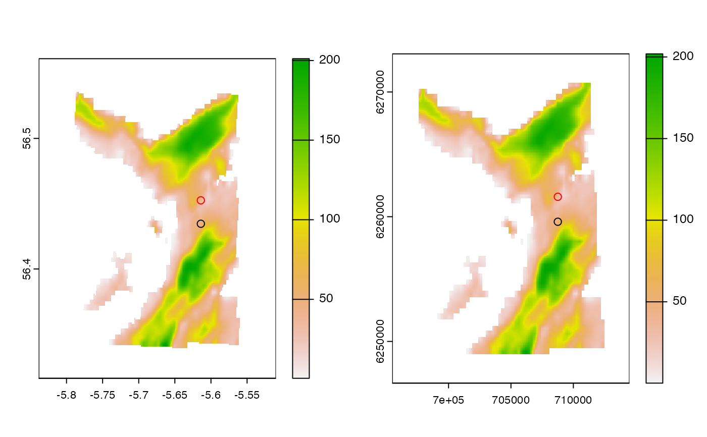
# Compare east
compare(90)
# Compare South
compare(180)
 # Compare West
compare(-90)
compare(270)
# Compare West
compare(-90)
compare(270)